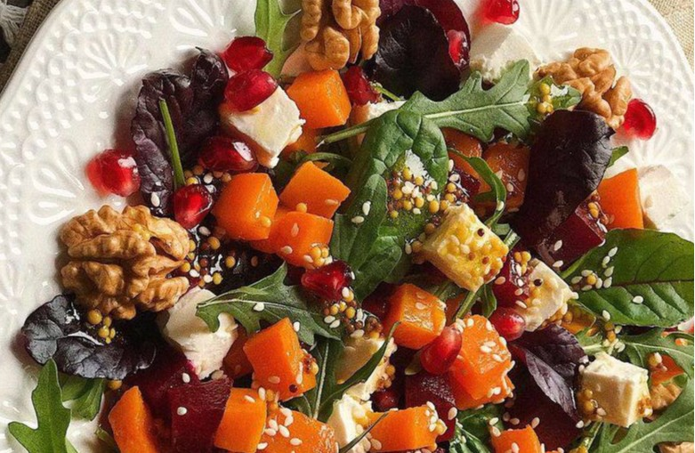

Салат со свеклой, тыквой и фетой

- свёкла (средняя) — 1 шт. (~200 г)
- тыква — 150 г
- руккола — 50 г
- сыр фета — 30 г
- грецкие орехи — 20 г
- оливковое масло — 1,5 ст. л.
- лимонный сок — 1 ст. л.
- соль и чёрный перец
- семена тыквы или подсолнечника — 1 ст. л.
Запечь заранее свеклу и тыкву.
Остывшие овощи очистить, если надо,порезать и переложить в миску, добавить рукколу и фету. Посыпать грецкими орешками.
Для заправки смешать 1 ст. л. лимонного сока и 1 ст. л. оливкового масла, добавить соль и чёрный перец по вкусу. Полить салат заправкой и аккуратно перемешать. Посыпать семечками.
 Назад к списку рецептов
Назад к списку рецептов